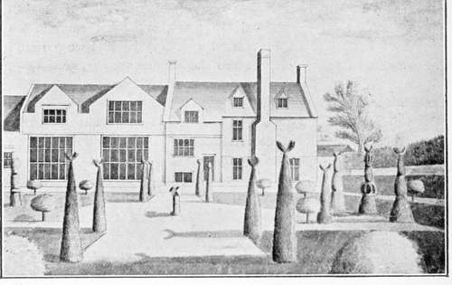

Gardening Under William And Mary. Part 5
Description
This section is from the book "A History Of Gardening In England", by Alicia Amherst. Also available from Amazon: A History Of Gardening In England.
Gardening Under William And Mary. Part 5
The English Gardener, by Leonard Meager, was a popular book, and went through several editions. But little notice has been taken of the author, who was much more old-fashioned than his contemporaries. This book, in a quiet way, gives a great deal of practical information about fruit and kitchen-gardening, and his " Catalogue of Flowers," " such as are only for ornament in their places where they grow, or for nose-gays," reminds us more of Parkinson than of Evelyn or London and Wise. He calls the flowers all by their homely English names :—Such as Coventry Bell flowers {Campanula Medium), Melancholy Gentlemen (Hesperis tristis), Goat's Rue (Galega officinalis), None-such or flower of Bristol (Lychnis chalcedonica) and King's Spear, yellow and white (Asphodelus). Meager, on the title-page of the 1688 edition of his book, says he had been " Thirty years a Practitioner in the Art of Gardening." From the dedication, it appears that for many years he was gardener to Philip Hollman, of Warkworth, in the county of Northampton. The Hollmans were a good old family, and Philip, who died in 1669, seems to have encouraged Meager in his work, as indeed Meager adds he assisted all his " other servants that had any inclination or endeavour to the Practise of Good Husbandry." Meager probably shows us a type of the quiet old fashioned " neatly-ordered" gardens, throughout England, The quaint view of Netherton, in Cornwall, is from a sketch made by Edmond Prideaux, about 1712, of a garden of this kind. Coryton Park,* in Devonshire, is a good example still existing. It was laid out about 1680, and when alterations were made in 1756, the old garden was left as a kitchen-garden, and is still untouched. The old wall, which divides the upper or new from the lower or older garden, is of a quaint zig-zag form ; the simple lines of the rest of the garden might have been taken from Meager's book. A path all round, two large square parterres, two smaller ones, with two corners curved to allow room for a path round a pond and fountain, and across the centre of each plat, a clipped yew-hedge following the same curve, and terminating at the edge of the gravel path with a cypress-tree, two statues, a sundial, and opposite the fountain against the outer wall an old garden house or orangery, compose the design.
Netherton. from a sketch by edmond prideaux, 1727.
This kind of plan was already becoming old-fashioned, and the tendency was to make larger gardens than could be kept up in a formal style. Sir William Temple, in 1685, saw the danger when he wrote, " As to the size of a garden which will perhaps in time grow extravagant among us, I think from four or five to seven acres is as much as any gentleman need design." His own garden at Sheen was not large, but beautifully kept; of this wrote Evelyn, in 1688: "the wall fruit trees are most exquisitely nail'd and train'd, far better than I ever noted." His " Retreat " later in life in Surrey he called Moor Park after the favourite garden of his youth, Moor Park, in Hertfordshire, which he describes so delightfully, as it was, he says, "the perfectest figure of a garden I ever saw." † At the new Moor Park he laid out a garden in the Dutch style. It is not to be wondered at, that the statesman who negotiated the Triple Alliance should prefer the taste of the Netherlands to that of France, but he was minded enough to get what was good from France also. He prided himself on having introduced four new sorts of grapes into England:—1. The " Arboyse from Franche Compte, which is a small white grape ... it agrees well with our climate ... it is the most delicious of all grapes that are not muscat. 2. The Burgundy, which is a grizelin or pale red, and of all others surest to ripen in our climate, so that I have never known them to fail one summer these 15 years, when all others have; and have had it very good upon an east wall. 3. A Black Muscat, which is called the Dowager, and ripens as well as the common white grape. 4. The Grizelin Frontignac, the noblest of all grapes I ever ate in England, but it requires the hottest wall and the sharpest gravel, and must be favoured by the summer too, to be very good." Unlike the proud possessor of the " Tulipe noire," or Alphonse Karr's enthusiastic old savants who fought over a Buddlea,* Temple was very generous in distributing the vines he introduced, for he writes: "I ever thought of all things of this kind the commoner they are made the better".
* Belonging to Rev. Marwood Tucker.
† Sir Wm. Temple's Miscellaneous Works.
Temple turned his attention chiefly to fruit culture. Of flowers he says :—" I only pleased myself with seeing or smelling them, and not troubled myself with the care, which is more the ladies' part than the man's." Perhaps he left the floral part of his garden to his charming wife, Dorothy Osborne. In her delightfully fresh and witty love-letters to Temple during the long years of their engagement, we have one reference which is enough to show that she, too, took interest in gardening. She writes, in 1654, of Sir Samuel Luke, a neighbour of hers at Chick Sands, in Bedfordshire: "But of late I know not how Sir Sam has grown so kind as to send to me for some things he desired out of this garden, and withal made the offer of what was in his, which I had reason to take for a high favour, for he is a nice florist".
Another gardener who helped to encourage grape growing by distributing vines was Rose, gardener to Charles II. and author of The English Vineyard Vindicated. He offered to " all that desire it sets and plants of all the best vines sufficiently tried in our soil and climate at reasonable prices." † And John Beale, following the example set by Rose, used to offer to give plants of vines to "cottagers," but they generally answered "churlishly that they would not be troubled with grapes"; but when he explained that in a few years their grapes would fetch a good price in the markets, " they were soon of a more thankful mind".
* Buddlea globosa, introduced 1774.
† Letter concerning Orchards and Vineyards, John Beale, 1676.
Continue to:
- prev: Gardening Under William And Mary. Part 4
- Table of Contents
- next: Gardening Under William And Mary. Part 6